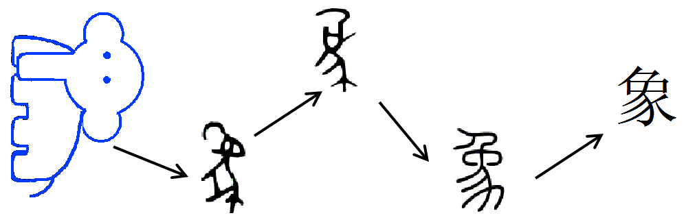
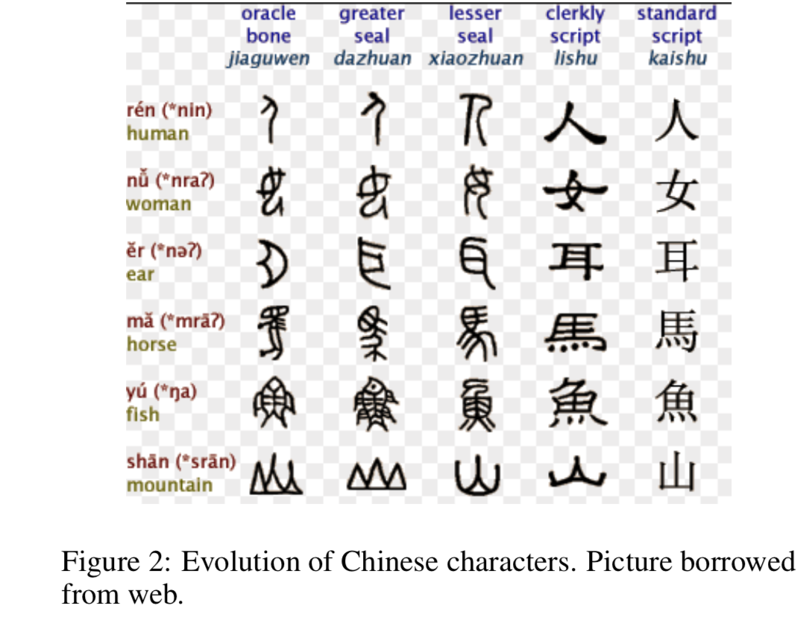
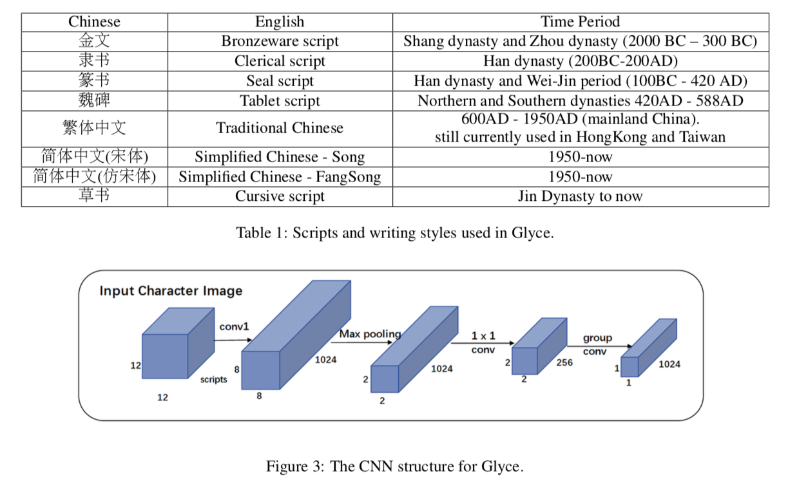
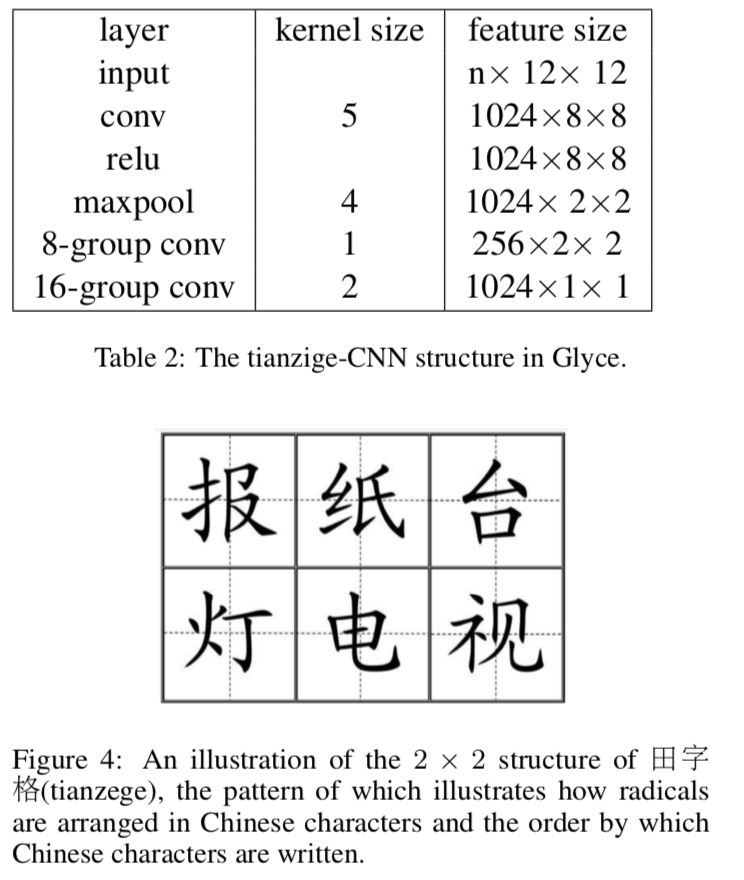
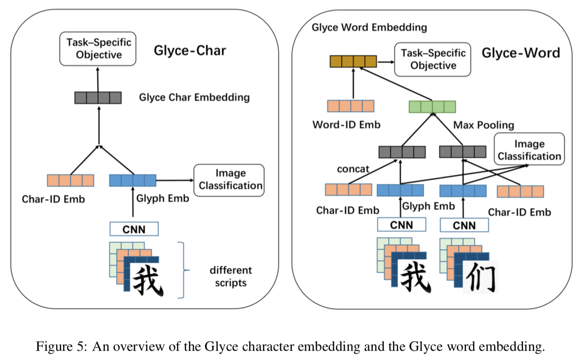
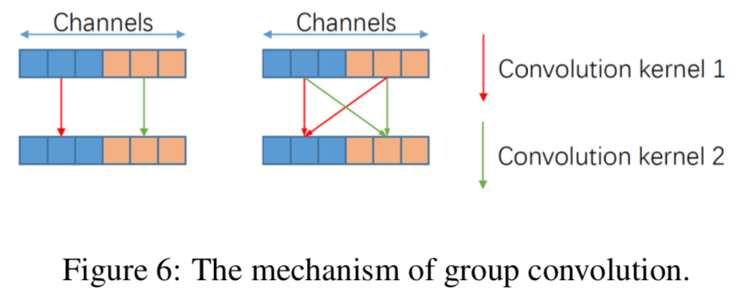
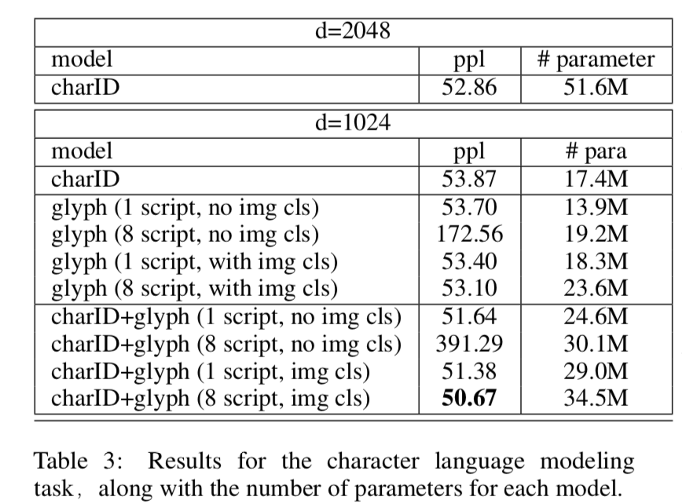
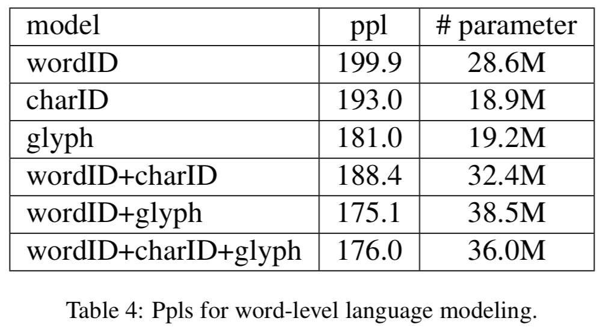

论文翻译 Glyce:Glyph-vector for Chainese Character Representations. Yuxian Meng,ect.
摘要
直观来说，在做像中文这样起源于象形字语言的NLP的任务时应该更多的从字形方面去挖掘信息。然而由于现在在象形文字上缺乏足够的证据，缺乏具有泛化能力的标准的计算机视觉模型，因此一个有效的利用字形信息的方法暂时还没找到。
在这篇论文里，我们推出了Glyce去填补这方面的空缺——一个针对于中国字符的字形向量。我们做了以下三个方面的创新：（1）我们使用了历史上的中文汉字（如铭文，篆书，繁体字）来丰富象形字。（2）我们使用CNN架构去对中文进行加工处理。（3）在多任务学习系统中，我们使用图像分类作为辅助任务，以提高模型的泛化性能。
首先我们证明了基于字形的模型能够在广泛的NLP任务中始终优于word/char-ID的模型。并在13项中文NLP上达到更好的性能。包括（1）字级语言建模；（2）词语级语言建模；（3）中文分词；（4）名称实体识别；（5）词性标注；（6）相关性分析；（7）语义角色标记；（8）句子语义相似性；（9）句子意图识别；（10）汉英机器翻译；（11）感情分析；（12）文档分类；（13）章篇分析；
介绍
中国字符是表意文字符，可以被分解成更小的部分：象形字，图像描绘的对象，例如 “亻”表示人，“日”表示提样，“艹”表示植物，对于形声字，通常用于发音“青”表示晴读青。早在公元前2世纪，《说文解字》就用图形部分来表征汉字，这一传统沿用至今。由于许多的汉字是从图片演变而来，因此汉字的表意符的编码含有很丰富的信息。

分布式向量的表示方法，为文本语义的表示提供了一种优雅的表示方式，并广泛用于自然语言处理之中。主流的算法大多是以单词或者字符作为基本语义单位，用来学习word embedding，但是字形表示却很少被使用。很直观，考虑到字形信息有助于语义建模，尤其是最近的研究直接支持了这一论点，事实证明，字根Embedding在广泛的语言理解中已被证明是很有用的。（搜狗首席科学家柳超博士谈“字根嵌入”）并且，据报道，五笔可以提高机器翻译的性能。虽然五笔和字根的表示上编码了一些字符结构的信息，有助于构建根号的字符表示，但是字根和五笔表示都是以任意的Id编码的，因此不会涉及更深层次的象形信息。

最近，使用基于CNN算法在字符特征上取得了一些效果，然而不幸的是并没能带来性能的一致性提高，并在一些方面得到了负效果。比如Dai 和Cai 在字符上使用CNN模型获得字符表示，并用在下游的任务之中。其报告中说，象形表示的结合实际上会降低性能，并表示CNN为语言建模并不能提供额外有用的信息。使用相似的策略，Liu等人在文本分类上用该方法，但是最终效果得到了有限的提升。
对于之前CNN模型中较差的结果，我们可以给出如下的解释：（1）没有使用正确版本的文字书写方式，如图2所示，最终名的版本包括甲骨文，隶书，篆书，碑文。这些文字的演进遵循着特定的规律，字符从一开始的便于绘画到最后的便于书写，直到现在他们变得越来越不像象形文字，现如今用的最多的版本就是中文简体字了，他很便于去书写，但是它失去了最有效的象形信息。这使得仅通过简体中文去进行训练会残生较差的结果。（2）并没有使用正确的CNN架构，不像图片数据，其尺寸非常大，字符的尺寸会显著的变小，比如通常用（12*12），因此它需要一个不同的架构去捕获字符信息。（3）在之前的工作中没有调整函数：不像在imageNet上的分类任务，它包含了几千万的数据集，在汉字中大约只有一万个汉字因此，因此在训练时应防止过拟合，从而提高模型泛函能力。

- 在本文提出了Glyce，我们将汉字视作图像，并使用CNN来获取他们的表示，并使用以下技术解决上述问题：我们使用历史和现代汉字（如铭文，隶书，篆书，繁体中文），以及不同书写风格的文字，如草书，从文字图像中获得丰富的图形信息。
使用中文字符识别量身打造了田字格-CNN
我们使用多任务学习方法，通过添加图像分类损失函数来提高模型的泛化性能。
使用Glyce模型，我们在13项任务中取得了不错的成果。
文中第二节表示相关工作，第三节是具体模型，第四节是实验结果，第五节是总结
相关工作
汉字可以分解成更小的原始成分，这些成分本身比词语能够表示更为有意的基本单位。一系列的工作使用字根来进行表述，另一种是使用五笔编码的方式，并且Tan等人发现五笔编码能够有助于机器翻译的性能的提高。
就我们而言，首先在Dai和Cai中探讨了汉字表示上运行CNN来获得汉字的表示。Tan通过在Glove上使用CNN架构，通过skipgram方法去学习中文字符的embedding，并在语义评估任务方面有显著改善。但是他没有根深一步去探索在真实环境下的中文NLP任务另一个重要的工作是Liu，他全面的结合学习虚拟特征三种不同的语言：中文、朝鲜文、日文，用于对维基百科标题进行分类；类似的，Zhang也使用上述方法去进行在线产品的综述。Liu初步探讨了在文本分类任务中使用CNN编码中文的可能性，对我们而言，对于汉字作为标志图案是否以及如何处理可以帮助语义建模，还没有达成一致的结论。
Glyce
在这一节，我们从细节上去探讨Glyce模型
3.1 使用历史的书法作品
如上述所讨论的，象形文字信息在简体中文中严重丢失，因此，我们建议使用历史上不同时期的字体以及不同的书写风格。我们收集了以下几种主要的字体：金文、隶书、篆书、魏碑、繁体中文以及简体中文，并且有着不同的书写风格：草书、仿宋。具体的细节在表1中。
字体属于不同时期的，通常是非常不同的形状，可以从不同的方面获得象形信息，不同的字体和书写风格有助于调高模型的泛化性能。这两种策略类似于计算机视觉中广泛使用的数据增强策略。
3.2 田字格-CNN架构
深度CNNs广泛的应用于计算机视觉任务，如图像分类检测，标准的CNN模型分为两部分，包括卷积层和池化层。对于一个三维的图像输入x维度为H W C,表示输入的高度，宽度和通道数，一个CNN的模型使用核窗扫过输入格栅。nn的核从原始的图像映射每个 n n * C区域至一个值。然后在卷积操作后进行max-pooling操作，从周围的的格栅选出最大值。
但是不幸的是，直接使用深度CNN模型在我们的任务上将会导致非常有限的性能提升，原因如下（1）相对较小的字符图像尺寸：比如Imagenet的图像通常是800600，然而对于中文的图像，往往都非常小，只有12 12的大小；（2）缺乏训练样例：在Imagenet数据集上的分类使用了一千万张不同的图像。然而，对于中文字符，只有10000的图像去完成字符的区分。
为了解决这个问题，我们推出了Tianzige-CNN模型，如图3所示，田字格是中国书法的传统形态，它是一个由四个正方行组成的，如图XX所示。输入图像x_image首先通过和大小为5的卷积层，输出通道1024捕获更低层次的象形特征，然后通过一个核大小为4的一个max-poolin去完成特征的映射，从而使得特征从8 8降低到田字格的2 2 。这个2 *2 的提田字格架构展示了部首在汉字中的排列方式以及汉子的书写顺序。我们发现最终我们应用间距操作将田字格映射为最终的输出。在这里我们不适用传统的卷积操作，我们使用群卷积；如图6所示，群卷积的滤波器比正常的滤波器尺寸小很多， （增加对角的相关性），减小训练参数，不容易过拟合。
同时，将模型从单种笔迹至多种笔迹，这样可将输入从2D（d_fontd_font）转换成3D(N_script d_font* d_font),d_font是字体的尺寸。
3.3 以图像分类为辅助目标
为了防止后续的过拟合，我们使用使用以以图片分类作为辅助训练目标，来自于CNN的字形Embedding h_image将会被传递到一个图片分类目标去预测它相应的字符Id。假设图片x的标签为z，图片分类的训练目标函数可以给出
L(cls)=-logp(z|x)=-log softmax (W*h_imag)
L(task) 表示我们需要处理的特定任务目标函数，例如语言模型，分词，我们将L(task)和L(cl)，因此最终的目标函数为
L=(1-lamda(t))L(task)+lamda(t)L(cls)
这里的lamda(t)控制着特定目标函数和辅助图像分类目标函数，lamda(t)=lamda_0*lamda_1^(t)，这里lamda_0的取值范围为0到1之间，表示初始的值，lamda_1表示衰减的值。这样意味着图像分类目标的影响随着训练的进行而减小，直观的解释就是在训练的早期，我们需要从图像分类任务中获得更多的规则。将图像分类作为训练目标，模拟了多任务学习的思想。

3.4 Glyce-Char Embeddings
Glyce-Char embedding的概述如图5所示，图片来自于不同字体的相同汉字符号的堆叠，并通过CNN模型去获得图像h_image。h_image直接输出到图像分类器模型去训练L(cls)。Glyph embedding和charID embedding 结合了Glyce-char embedding，可以进行拼接、或者其他的全连接。


3.5 Glyce-Word Embedding
对于一个中文词汇可以进一步分解为多个字，最近有的工作将汉字用词语表示，以补货更多更精细的予以，并能够处理未知的单词，Glyce-word Embedding如图5所示，我们首先使用CNN模型获得glyph embedding，然后将charId embedding 拼接去获得Glyce-char Embedding。由于汉语单词可以有任意数量的汉字组成，因此我们使用一层max-pooling去使得所有的Glyce-char的维度一致。池化层的输出进一步与word ID Embedding结合，从而获得Glyce-word embedding。
实验结果
（选取实验1，2，11：字级语言模型，词汇级语言模型，感情分析）
4.1 字级语言模型
第一个任务就是字级语言模型，在该模型中，我们需要根据前面的字符去预测出即将出现的符。我们将会在CTB6上去进行模型的评估，我们将分别使用80%、10%、10%进行训练、验证以及测试。数据有4401个不同的汉字。我们将使用LSTM架构，并用grid search 去调整层数量，dropout rate、batch size和学习率。
表3显示了每种模型的ppl，包括参数的数量。charId 意味着只有char id embedding；glyph 意味着只有glyph embedding，charId+glyph意味着两者都有。1 script意味着只有一种汉字字体（简体字），8 script 意味着使用了不同的字体和书写风格进行训练。
我们可以看出最好的glyph模型要由于char模型。当d=1024，glyph，没有图像分类胜过最好的char ID，尽管它的参数很小，不需要去在一个D*V大小的char embedding表中进行查找。这验证了汉字的字形编码了大量的语义信息，只要我们使用正确的CNN结构，基于字形的模型就由于基于charId的模型。我们通过添加辅助图像分类目标函数和历史字体，来观察性能的提升。对于8个字体模型，图像分类目标函数是必不可少的，如果不添加的话，ppl会暴涨。解释很直观：图像分类目标函数促使CNN模型从不同的脚本中提取出共享的象形特征，这对理解字符语义至关重要。
组合charID embedding和glyph embedding 可以给出一个额外的性能提升，当采用图像分类辅助，然后结合char ID，并利用8种字体最终可以的50.67的ppl。这个指标同样也比d=2048要好。

4.2 词语级语言模型
同样的我们使用CTB6数据集去做词语级的语言模型评估。与之前训练/验证/测试的划分一致，我们使用结巴分词去进行数据的分割。分割以后数据集包含50000个词语，我们将少于2次的词组用UNK token来代替。LSTm模型用在词语级别进行词组的预测。不同的区别在于如何计算词语 embedding：
word ID：每个词语都会有一个独一无二的wordID
char ID：词语 embedding是基于构成汉字的Embedding，
glyph：字形embedding
根据表中的结果进行对比可知，字形信息为单词级语言建模任务提供了重要的语义信息。
